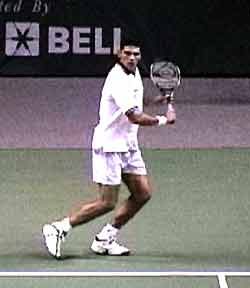
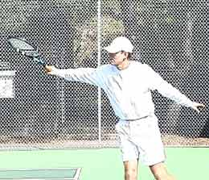
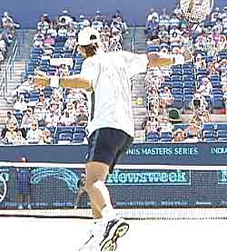

← Bài trước: The Slice Backhand - Part 2 | 🏠 Classic Lessons Trang chủ | Bài tiếp: → The Swing Volley
Cú cắt bóng (slice) hoặc cú xoáy cuộn trái tay (underspin backhand)
Thư viện kiến thức quần vợt thống nhất — Cơ bản, Phân tích kỹ thuật, Thư viện tham khảo và nhiều hơn nữa
Cú cắt bóng (slice) hoặc cú xoáy cuộn trái tay (underspin backhand)
Scott Murphy
Ở đây tôi trình bày cơ bản về cú cắt bóng đa năng - bạn không thể trở thành một tay vợt thành công nếu thiếu nó.
Mặc dù ngày nay có sự nhấn mạnh lớn về phong cách đánh bóng xoáy cuộn mạnh mẽ, nhưng thực tế là có một cú cắt bóng trái tay là điều tuyệt đối cần thiết, dù bạn đánh trái tay một tay hay hai tay.
Sử dụng xoáy cuộn là đa dạng: cho các cú đánh sân, trả giao bóng, cú đánh cận net, bán lưới và lưới. Patrick Rafter là ví dụ về một tay vợt có thể sử dụng tất cả các khả năng này trong một điểm. Andre Agassi có thể đánh hai tay cho 90% trận đấu, nhưng đột nhiên gọi đến cú cắt bóng trái tay trong một tình huống nhất định. Sau đó là Steffi Graf vĩ đại, người đánh hầu hết các cú trái tay của mình với xoáy cuộn.
Bạn không thể trở thành một tay vợt hoàn chỉnh hoặc một tay vợt thành công nếu thiếu nó. Trong thực chiến, bạn cần cú cắt bóng trong nhiều tình huống khác nhau: để trung hòa một cú đánh xoáy cuộn nặng, để thay đổi tốc độ của một lượt đánh, để giữ bóng thấp, để mua thời gian trên phòng thủ, và đánh những quả bóng thấp, cao, rộng hoặc ngắn. (Có giá trị khi đề cập rằng một số chuyên gia quần vợt thích gọi cú cắt bóng là "xoáy cuộn" vì theo nghĩa đen, quả bóng bị cắt cong. Tuy nhiên, tôi nghĩ rằng với hầu hết mọi người, những cú đánh này được coi là giống nhau và trong bài viết này tôi sẽ sử dụng các thuật ngữ này thay thế cho nhau).
Cú cắt bóng trái tay đẹp của Rafter - lý tưởng cho trả giao bóng, lượt đánh sân và cú đánh cận net.
Khó khăn ban đầu
Mặc dù phát triển cú đánh này là quan trọng, nhưng theo kinh nghiệm của tôi trong nhiều năm, hầu hết các tay vợt tìm thấy cú cắt bóng trái tay khá khó khăn ban đầu và cần được khuyến khích để tiếp tục luyện tập các yếu tố cơ bản của cú đánh này cho đến khi chúng trở nên quen thuộc hơn.
Trước khi đề cập đến các yếu tố đó, tôi muốn bác bỏ một số hiểu lầm phổ biến về cú đánh này. Đầu tiên, một cú cắt bóng trái tay tốt không phải là "chặt" hay "kéo". Cố gắng sử dụng các động tác này có thể đưa bóng vào đáy lưới hoặc khiến nó nổi lên và bay lơ lửng.
Các cú cắt bóng trái tay tốt nhất thực chất là các cú đánh mạnh có thể được đánh với các mức độ xoáy cuộn khác nhau, và chúng tôi sẽ trình bày quỹ đạo đánh vợt phù hợp để cho phép bạn làm điều này.
Grip
Grip châu Âu gần như được coi là grip tốt nhất để đánh cú cắt bóng. Điều này là vì grip châu Âu cho phép người chơi mở mặt vợt tự nhiên hơn.

Grip châu Âu là grip được sử dụng rộng rãi và hiệu quả nhất cho cú cắt bóng trái tay.
Với một số học viên, việc học grip châu Âu có thể trở thành một vấn đề thực sự, thường là vì họ không sử dụng nó hiệu quả trong các khía cạnh khác của trò chơi, chẳng hạn như giao bóng hoặc lưới. Khi cố gắng học cú cắt bóng, các tay vợt có xu hướng nhanh chóng chuyển lại về các grip trái tay cũ của họ. Đối với một tay vợt đánh một tay, đó là grip trái tay đông phương đầy đủ. Đối với một tay vợt đánh hai tay, đó thường là grip thuận tay phải.
Mặc dù có thể đánh một phiên bản của cú cắt bóng với grip trái tay đầy đủ (hoặc mạnh), nhưng các tay vợt không chuyển sang grip châu Âu cuối cùng phải làm việc chăm chỉ hơn để làm điều đó. Điều này là vì, với grip mạnh hơn, rất khó để đưa cạnh trước của vợt vào bên ngoài quả bóng. Kết quả thường là một quả bóng với quá nhiều xoáy bên và cũng khó điều khiển hơn, và đánh mất tốc độ. Ở cực đoan khác, cố gắng cắt bóng với grip thuận tay sẽ khiến bóng nổi lên, đồng thời có thể gây căng thẳng cho cổ tay.
Được thừa nhận, nếu bạn chưa từng sử dụng nó trước đây, lần thử đầu tiên với grip châu Âu có thể rất khó chịu. Nhưng với sự hiểu biết thực sự về cách nó hoạt động và nhiều lần lặp lại, cú đánh này sẽ dần trở nên thoải mái. Thậm chí nhiều tay vợt có kinh nghiệm cũng nghĩ rằng đó là cú đánh tự nhiên và lưu động nhất trong trò chơi.
Giai đoạn chuẩn bị
Giống như tất cả các cú đánh khác, hãy đảm bảo bạn sử dụng mắt hiệu quả. Càng sớm bạn nhìn thấy quả bóng rời vợt của đối thủ, bạn càng sớm có thể xác định xem câu trả lời của bạn cần được đánh với cú cắt bóng, và bạn càng nhanh chóng có thể đưa mình vào vị trí để đánh nó.

Mark Philippoussis trình diễn một xoay hoàn hảo cho cú cắt bóng trái tay. Lưu ý bước chân với chân trái và cuộn đầy đủ.
Hãy nhảy sẵn sàng ngay trước khi đối thủ đánh bóng và khi bạn nhìn thấy bóng di chuyển về phía trái tay của mình, hãy bước sang bên với chân gần bóng nhất và bắt đầu xoay hông và vai. Tạo một cuộn đầy đủ bằng cách giữ đầu và vai thẳng hàng và kết nối vai đánh với mũi.
Trên quỹ đạo đánh vợt, cánh tay đánh nên uốn cong khoảng 45 độ. Nếu bạn uốn cánh tay nhiều hơn thế, bạn có thể gặp phải cú đánh muộn hoặc quỹ đạo đánh vợt chặt. Mặt vợt nên chỉ hơi cao hơn mặt phẳng của quả bóng đến, cao hơn hoặc thấp hơn tùy thuộc vào chiều cao thực tế của cú đánh cụ thể.
Để thuận tiện cho việc thay đổi grip và cung cấp hỗ trợ, bàn tay không vợt nên ở cổ vợt trong suốt quỹ đạo đánh vợt.
Khi hoàn thành quỹ đạo đánh vợt, cổ tay nên ở vị trí góc 45 độ so với cánh tay trước. Mặt vợt bây giờ đã mở với các cạnh của vợt gần như bằng nhau.
Điều này rất quan trọng. Cạnh bên trong của vợt là cạnh gần tai. Cạnh bên ngoài hoặc "cạnh dẫn đầu" là cạnh di chuyển về phía bóng đầu tiên. Nếu cạnh bên ngoài nhiều hơn cạnh bên trong khi hoàn thành quỹ đạo đánh vợt (như trong cú đánh xoáy cuộn trái tay), điều này cho thấy grip trái tay quá mạnh hoặc vị trí cổ tay kém.
Giai đoạn hoàn thành

Cánh tay đánh của bạn nên uốn cong khoảng 45 độ trên quỹ đạo xoay. Mặt vợt mở, các cạnh gần như bằng nhau.
Khi sắp bắt đầu quỹ đạo đánh vợt, hãy đặt chân sau (chân trái cho tay vợt phải) và chuyển trọng lượng sang chân trước càng thẳng hàng càng tốt. Hãy đảm bảo uốn gối (ngoại trừ những quả bóng rất cao), nhưng giữ thẳng lưng càng nhiều càng tốt. Làm chìm vai dẫn đầu là một nguồn lỗi phổ biến khi đánh với xoáy cuộn.
Tránh đánh từ thế đứng mở. Lý tưởng nhất là bạn nên bước vào cú đánh, nhưng nếu bạn buộc phải bước nhiều hơn qua cơ thể thì cũng ổn. Điều này là vì bạn vẫn có thể đánh cú cắt bóng trái tay tốt với điểm tiếp xúc muộn hơn so với các cú đánh sân khác.
Với điểm tiếp xúc muộn hơn này, bạn có thể mang bóng lâu hơn vì nó cho phép tối đa hóa sự mở rộng của cánh tay vào cú đánh. Đánh cú cắt bóng trái tay quá sớm có thể dẫn đến một quả bóng yếu, "bay lơ lửng" hoặc quả bóng rơi vào lưới.

Trong khi điểm tiếp xúc vẫn ở cạnh trước của cơ thể, cú cắt bóng trái tay có thể được đánh với điểm tiếp xúc muộn hơn so với các cú đánh sân khác.
Có những người ủng hộ quỹ đạo đánh vợt "cao xuống thấp" nghiêm ngặt. Điều này có thể tạo ra xoáy cuộn, nhưng có xu hướng khiến bóng bay lơ lửng và mất tốc độ. Nó cũng có thể khiến bạn có ý tưởng sai về kết thúc. Nếu bạn nghiên cứu các hoạt ảnh của Rafter hoặc Philippoussis, bạn sẽ thấy rằng mặc dù vợt di chuyển xuống sau khi đánh, nhưng nó vẫn kết thúc cao với vị trí bàn tay gần như cùng chiều cao như một cú đánh mạnh với xoáy cuộn.
Vì những lý do này, tôi thích vợt bắt đầu chỉ hơi cao hơn nơi bạn sẽ tiếp xúc với bóng. Điều này tạo ra một quỹ đạo đánh vợt đơn giản hơn cho phép bạn tạo ra đủ xoáy cuộn, nhưng vẫn "đánh" bóng.
Khi bạn đưa vợt về phía trước, hãy duy trì cổ tay chắc chắn. Cánh tay của bạn nên thẳng ra trước khi tiếp xúc và giữ nguyên như vậy suốt quá trình kết thúc.


Vị trí kết thúc trên cú cắt bóng. Quá nhiều nhấn mạnh vào việc đánh từ cao xuống thấp có thể khiến bóng bay lơ lửng.
Lưu ý cách Rafter giữ vai gần vuông góc với lưới với cánh tay không đánh di chuyển theo hướng ngược lại với cú đánh.
Video tốc độ cao cho thấy rằng khi tiếp xúc, đầu vợt sẽ thực sự vuông góc với sân. Nhưng cố gắng tạo ra vị trí này một cách có ý thức sẽ dẫn đến rắc rối thực sự. Đừng sử dụng cổ tay để điều chỉnh mặt vợt. Hãy tưởng tượng mặt vợt hơi mở khi tiếp xúc và cho phép cánh tay trước cuộn tự nhiên qua cú đánh và thực hiện điều chỉnh. Mặt vợt sẽ tự mở và giữ nguyên như vậy đến khi kết thúc.
Hãy nhắm vào bên ngoài quả bóng. Hình ảnh đánh qua quả bóng giúp củng cố tiếp xúc bóng. Quá trình kết thúc nên hướng ra ngoài đến đỉnh lưới và hướng lên mục tiêu.
Trong quá trình đánh, người chơi nên cố gắng giữ vai thẳng hàng với lưới và giảm thiểu sự xoay chuyển của thân. Để đảm bảo điều này, ngay khi bạn bắt đầu quỹ đạo đánh vợt, hãy gửi cánh tay không đánh theo hướng ngược lại.
Philippoussis đánh qua một cú trả giao bóng cắt bóng trái tay - điều này là cần thiết cho một trò chơi linh hoạt ở tất cả các cấp độ.
Khoảng cách đến quả bóng
Tìm khoảng cách lý tưởng giữa cơ thể và quả bóng cần kinh nghiệm. Nếu bạn quá gần, bạn sẽ dẫn dắt quỹ đạo đánh vợt với cánh tay, khiến mặt vợt muộn và quá mở. Nếu bạn quá xa, cánh tay của bạn sẽ bị quá giãn và bạn sẽ không thể có được bất kỳ sự cắn vào quả bóng nào. Tuy nhiên, đối với những quả bóng nảy cao, bạn muốn giữ cơ thể của mình ở một khoảng cách nào đó xa hơn và để chân trước thẳng trong quá trình đánh.
Đó là cơ bản về cơ học tạo ra xoáy cuộn, điều bạn có thể áp dụng cho nhiều tình huống, một số tình huống chúng tôi sẽ thảo luận trong các bài học tiếp theo. Dù bạn chơi phong cách nào, điều này sẽ làm trò chơi của bạn linh hoạt và toàn diện hơn.

Scott Murphy đến từ Marin County, California, nơi anh bắt đầu chơi quần vợt từ tuổi 5 trong một gia đình yêu thích quần vợt. Cả hai bố mẹ của anh đều là những người có ảnh hưởng lớn trong sự phát triển của anh. Anh cũng học từ huyền thoại Marin là Hal Wagner và cựu top 10, Harry Roach. Scott là cựu sinh viên của Đại học California tại Berkeley, nơi anh chơi bóng chày và bóng đá nhưng vẫn tiếp tục làm việc trên trò chơi quần vợt của mình với huấn luyện viên nổi tiếng Chet Murphy.
Anh là huấn luyện viên trưởng tại San Domenico/Sleepy Hollow Tennis Club trong hơn 20 năm. Anh cũng đã chỉ đạo Nike Tahoe Tennis Camp tại Granlibakken Resort trong 10 năm. Scott hiện đang dạy riêng tại Ross, Marin County và vào mùa hè anh chỉ đạo Tuscan Tennis Academy mà anh thành lập tại Quarrata, Ý.
Hãy xem trang web của Scott tại scottmurphytennis.net
Bạn có thể liên hệ trực tiếp với Scott tại: scottmrph@yahoo.com
Nguồn: tennisplayer.net lưu trữ — The Slice or Underspin Backhand.docx (Thư viện giảng dạy của John Yandell, 2002-2022). Được trích xuất và hiển thị dưới dạng HTML cho Tennis Future Lab.